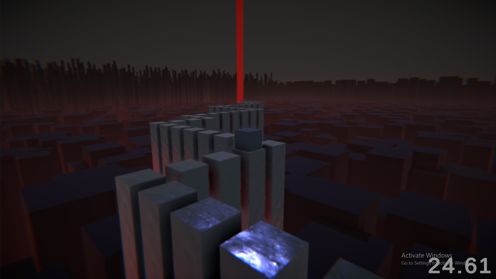

Cube rush,
made in Unity with C#

Made by Lukas Skaane
What I learnt
I learnt that I shouldn't hold myself back when thinking of ideas.
I also learnt that if I'm making a game, I should try to make it fun before adding more superficial features,
such as post-processing.
Explanation
For our last project in high-school, we had to create something in line with what we had studied, and
because of how I am usually too ambitious with project undertakings, I wanted to limit myself to make
something small and fun. At the end I realized that I'd made something that was too small though,
and it wasn't really very fun either.
Difficulties
The one thing I am proud of from this project is how I managed the camera. I wanted a camera that
followed the player, and it had to feel good to move around too. Originally I wanted to use math to
make the camera revolve around the player, but this would make things complicated quickly.
While researching I stumbled across an intuitive way of solving this problem.
If I attached a ball object onto the player, I could attach the camera to that globe, which made them follow each other.
If I then rotated the ball, the camera would go along the rotation of the globe. Then I only had to
adjust the camera rotation, and limit how far the ball could rotate.